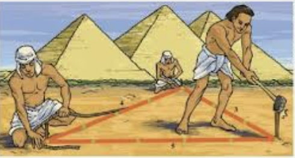

¿CÓMO SE ORIGINÓ LA GEOMETRÍA?

Hace miles de años, mucho antes de que existieran los libros de matemáticas, las personas ya necesitaban la geometría, aunque no lo supieran.
Por ejemplo, los agricultores del antiguo Egipto tenían que medir sus campos después de que el río Nilo se desbordara y borrara los límites de las tierras. Para hacerlo, utilizaban cuerdas y formaban figuras como triángulos y rectángulos. Así empezó a desarrollarse la geometría.
La palabra geometría significa literalmente “medir la tierra”. Al principio servía para resolver problemas prácticos: construir casas, dividir terrenos o levantar templos y pirámides.
Con el tiempo, algunos pensadores de la antigua Grecia comenzaron a preguntarse algo más:
¿Se pueden explicar las formas del mundo con reglas matemáticas?
Personas como matemáticos griegos estudiaron líneas, ángulos y figuras para entender cómo funciona el espacio. Gracias a ellos, la geometría pasó de ser solo una herramienta práctica a una ciencia que explica muchas cosas de nuestro entorno.
Pero lo más interesante es que la geometría no está solo en los libros.
Si miramos a nuestro alrededor, podemos verla en muchos lugares:
En los caminos rectos de un parque.
En los hexágonos de un panal de abejas.
En las formas de las hojas y las flores.
En los columpios, bancos o farolas de una zona verde.
Incluso en las baldosas del suelo o en las pistas deportivas.
La geometría está en la naturaleza y en las ciudades porque las formas ayudan a que las cosas funcionen mejor y sean más resistentes o bonitas. En realidad, vivimos rodeados de figuras geométricas sin darnos cuenta.
La próxima vez que pasees por un parque o por tu barrio, intenta descubrir triángulos, círculos, rectángulos o patrones que se repiten. Probablemente encontrarás más de los que imaginas.